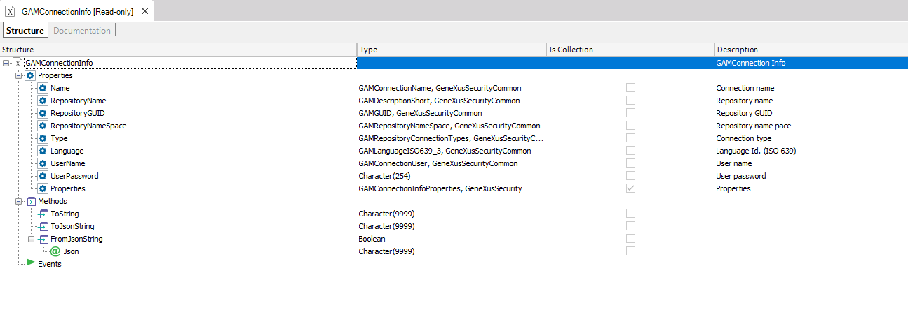

In some cases, it is useful to read the information of the connection.gam file programmatically to determine the GAM Repository Connection that is going to be used in the application.
In which case should I read the connection.gam file?
Remember that a GAM Repository Connection is used to establish a connection to the GAM database Repository every time the GAM API methods are used. The GAM Repository connection information is stored in the GAM database while the key of the connection is also set under connection.gam file, which has to be included in the server deployment.
This is the scenario of multitenant applications, where the same executables are used for different companies and the connection.gam file includes the same key for all tenants. The key is defined in the connection.gam file that is associated with each repository in the SysConnectionConfig table. Each repository represents a company and you can determine at runtime the GAM connection to be set depending on the company to work with.
The GAM API provides methods to read the connection.gam file, get the GAM connection from it, and set the GAM connection afterward.
The GAM.GetConnections method returns, in a collection of GAMConnectionInfo, a connections list that contains the key stored in the connection.gam file.
GAMConnectionInfo is a structured data type composed as follows:

See the GAMExampleLogin object where this method is used in the start event; note that in this case the first GAM connection found is used.
GAM.GetConnections(&ConnectionInfoCollection) //&ConnectionInfoCollection is a collection of GAMConnectionInfo data type If GeneXusSecurity.GAM.GetDefaultRepository(&RepositoryGUID) &isConnectionOK = GeneXusSecurity.GAM.SetConnectionByRepositoryGUID(&RepositoryGUID, &Errors) Else &ConnectionInfoCollection = GeneXusSecurity.GAM.GetConnections() If &ConnectionInfoCollection.Count > 0 //The first connection found is established by default &isConnectionOK = GeneXusSecurity.GAM.SetConnection(&ConnectionInfoCollection.Item(1).Name, &Errors) EndIf Endif
The GAM.SetConnection method returns true if the connection was successfully established. This means that all GAM methods will access the new repository set.
The method receives a parameter of char data type, which is the GAM Repository Connection name.
If the user who was authenticated does not have permission to access the new repository, he/she will lose the authentication.
The code above shows an example of where this method is used.